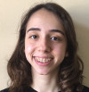

Officers
Eda Kahraman
Hi, my name is Eda and I am an 11th grader. I have been a member of TSA Turkey team for four years and this year, I serve as president. I participated in the Fashion Design event in 2016 and 2017 at National TSA Conferences in Tennessee and Florida and I have attended Technology Problem Solving in 2017. I have always had a special interest in fashion. I like to follow trends as well as designing and creating clothes. I have designed clothes since my childhood and I have also tried to sew. This year I am going to participate in Promotional Design and in Fashion Design. In the future, I want to spend my time with economics and designing.
Ömer Yağmurlu

Hi, I am Ömer.I've been a member of TSA Turkey for two years and therefore honoured to be selected as Vice President this year. Last year in Atlanta I helped our team make it to the finals in the Webmaster and Software Development events. In addition to the aforementioned events and SciVis, I also intend to be part of our System Control Technology team this year in Atlanta. Apart from TSA, I am interested in Everything in Javascript, robotics, computer algorithms and Informatic Olympiads. I aspire to be a future computer scientist advocating STEM, specialised in compiler and interpreter design.
Lara Turgut
I am Lara Turgut and I am in 11th grade at Istanbul Lisesi. I have been a member of TSA for two years. Last year I attended my first National Conference in Orlando and participated at Webmaster and Engineering Design. This year I am honored to be the treasurer of TSA Turkey. I am interested in physics and mathematics and plan to be a physicist in the future. Apart from TSA, I am a member of the science club of my high school. In my free time, I enjoy drawing.
Zeynep Duygulu
My name is Zeynep Duygulu and I’m in grade 11 at Istanbul Lisesi and the current sergeant-at-arms of our chapter. I’ve been a member of TSA for two years and attended my first conference in Orlando last year, where I participated in the events Biotechnology Design, Engineering Design and Webmaster. This year I will be participating in Biotech Design and Webmaster. My dream is to become a research oncologist in the future. I like to play the piano in my free time.
Zeynep Duygulu
My name is Zeynep Duygulu and I’m in grade 11 at Istanbul Lisesi and the current sergeant-at-arms of our chapter. I’ve been a member of TSA for two years and attended my first conference in Orlando last year, where I participated in the events Biotechnology Design, Engineering Design and Webmaster. This year I will be participating in Biotech Design and Webmaster. My dream is to become a research oncologist in the future. I like to play the piano in my free time.
Zeynep Duygulu
My name is Zeynep Duygulu and I’m in grade 11 at Istanbul Lisesi and the current sergeant-at-arms of our chapter. I’ve been a member of TSA for two years and attended my first conference in Orlando last year, where I participated in the events Biotechnology Design, Engineering Design and Webmaster. This year I will be participating in Biotech Design and Webmaster. My dream is to become a research oncologist in the future. I like to play the piano in my free time.